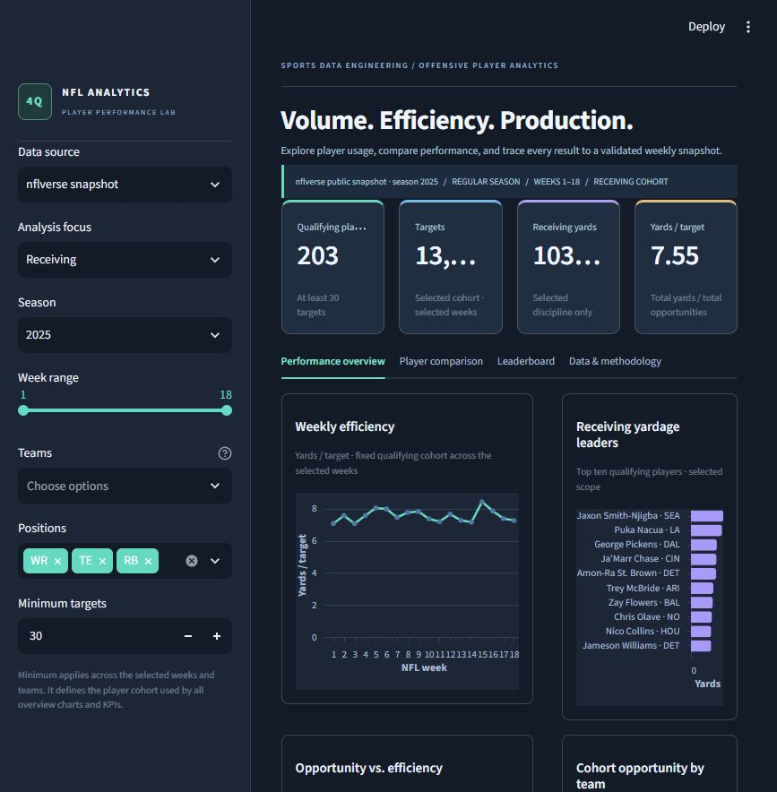

SPORTS DATA ENGINEERING
NFL Player Analytics
Explore real weekly player statistics through workload, efficiency, and production, backed by reproducible season snapshots.
Working local build / Public demo pending Python
Python- pandas
 SQLite
SQLite JavaScript
JavaScript

THE QUESTION
Which players combine workload with efficiency, and how does production change across a selected part of the season?
Sports analysis becomes more useful when the source, cohort, and denominator are clear. This project joins real player-week statistics with a reproducible ingestion process and an interactive exploration of passing, rushing, and receiving.
IMPLEMENTATION
From input to usable output.
The implementation includes source acquisition, schema and key validation, content-addressed snapshots, weekly Parquet partitions, weighted metrics, player comparisons, and source-to-dashboard reconciliation.
- Explicit nflverse season download
- Scope, schema & key validation
- CSV, weekly Parquet & manifest
- Cohort analysis & player comparison
Python / nflverse / Parquet / Data validation / Player analysis
ENGINEERING JUDGMENT
Decisions behind the implementation.
Aggregate by player identity
Players are grouped by ID across trades. Team history is retained, and team filters include only contributions recorded for the selected teams.
Weight rates by opportunity
Yards per opportunity is total yards divided by total attempts, carries, or targets. Weekly percentages are not averaged together. All overview charts share the same qualifying cohort.
Preserve gaps and provenance
Missing player-weeks remain gaps rather than fabricated zeroes. Source timestamps and checksums identify the snapshot, and invalid ingestion does not advance the current pointer.
EVIDENCE & FINDINGS
What the current build shows.
In the reviewed 2025 snapshot, the source contains 19,422 rows. Scope selection retains regular-season QB, RB, WR, and TE records; 13,385 rows are excluded by position or season type. Within that scope, users can examine workload and efficiency together, compare up to four players, and trace results to the selected weeks and teams.
The current data is box-score statistics. It does not include player-tracking Next Gen Stats, and source-record counts do not establish roster-confirmed games played.
Data attribution: nflverse contributors, CC BY 4.0. Records are filtered and transformed for this independent project; no NFL affiliation is implied.
VALIDATION
Check the result. Test the failure path.
Tests cover weighted denominators, player identity across trades, negative yardage, invalid counts, duplicate keys, repeatable publication, partition counts, failed-ingestion pointer preservation, snapshot checksums, filters, and dashboard reconciliation.
Explore the interactive dashboard and review the project documentation. The 2026 season is in progress and may be revised.
CURRENT BOUNDARIES
Implemented scope and next work.
The first release is descriptive: no opponent adjustment, injury attribution, snap share, projections, or fantasy scoring. Team charts represent contributions from the qualifying cohort, not full team totals.
Next engineering stage
The browser-based explorer includes player profiles and weekly comparisons. A scheduled refresh is prepared for GitHub Pages; verify it after publication and expand completeness and source-revision checks.
The scheduled refresh has not yet been verified on GitHub. This project does not claim a completed AWS architecture.